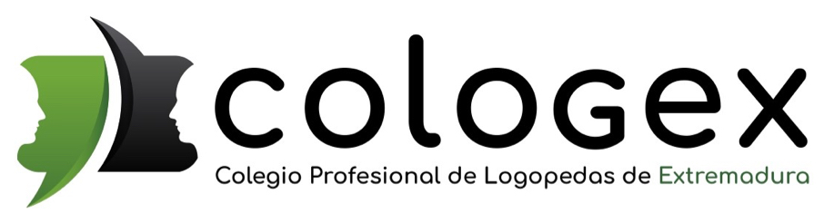

No vengo a hablarte de IA.
Vengo a enseñártela.
En 30 minutos vas a ver funcionando lo que una logopeda puede construir sin escribir una sola línea de código: un asistente que busca evidencia, materiales que no existían esta mañana, videojuegos con propósito y una comunidad que sigue contigo cuando acaba la clase.
5 demos reales
30 minutos
0 tecnicismos innecesarios
José Aserraf Cohén · Logoped-IA · Colmenia

LOGOPED-IA · EMPEZAMOS01